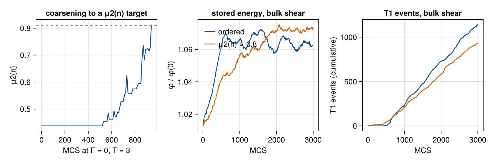

Jiang, Swart, Saxena, Asipauskas & Glazier (1999): sheared two-dimensional foam
A dry foam is a packing of gas bubbles separated by thin walls. Sheared slowly, it stores energy in its walls like an elastic solid until bubbles swap neighbours (T1 events), and then it flows. Jiang and co-authors modelled the foam as a large-Q Potts model with an area constraint per bubble and a shear term that biases copies along x. They showed hysteresis loops whose shape changes from elastic to viscoelastic to plastic with the shear amplitude and the wall energy J, and stick–slip avalanches of T1 events whose statistics depend on how disordered the foam is.
- Y. Jiang, P.J. Swart, A. Saxena, M. Asipauskas, J.A. Glazier, "Hysteresis and avalanches in two-dimensional foam rheology simulations", Phys. Rev. E 59, 5819 (1999), doi:10.1103/PhysRevE.59.5819.
The page shows, in order:
- the model code;
- a minimal run: the paper's ordered foam, from a brick wall;
- the results against the paper: the runs as videos, a verdict summary and the table of deviations;
- the details, collapsed: protocol, every pre-registered row, the full-run command and provenance.
The full run (V1–V20, 5 replicates each, 10 ordered and 30 disordered foams) is recorded, and the verdicts below come from it: 18 of the 42 pre-registered rows and all 4 negative controls pass, 24 rows fail. About 9 of the failures come from one finding that is under review: the provisional shear drive pins the foam at low shear rates (see "Pinning at low shear rate" below). The others are listed with their suspected causes in the deviations table. The result is shipped as provisional.
using Potts, PottsModels
using PottsModels.Analysis: stored_energy, side_counts, topology_moments, cell_graph, t1_events
using CairoMakie
using Statistics: mean, median
using Markdown, TOML
using Random: Xoshiro
CairoMakie.activate!(type = "png")1. The model
Eq. (1) of the paper: a wall energy J for every pair of unlike neighbouring sites, over the 20 neighbours up to the fourth shell, and an area constraint Γ(a − A)² per bubble. The shear adds, for a copy of the source's bubble into the target site, the bias γ(y, t)·(xtarget − xsource) along x (Eq. 2 in the displacement form, deviation DV3), with γ on the two boundary rows only (Eq. 6, boundary shear) or linear in y about the mid-plane (Eq. 7, bulk shear), steady or sin(ωt).
@potts_model ShearedFoam begin
@structural_parameters begin
lattice = (256, 256) # sites (04b p.5822)
end
@kinds medium bubble # dry foam: no site is medium
@parameters begin
J = 3.0 # wall energy per unlike pair (p.5823)
Γ = 1.0 # area constraint (p.5823); Γ = 0 coarsens
T = 1.0e-6 # T → 0⁺ (DV2)
γ0 = 0.0 # boundary shear amplitude (Eq. 6)
β = 0.0 # bulk shear rate (Eq. 7)
bulk = 0.0 # 1: Eq. 7, else Eq. 6
periodic = 0.0 # 1: G = sin(ω mcs), else G = 1
ω = 2π / 4000
ytop = 256.0 # the top row, L_y
ymid = 128.5 # the mid-plane, (L_y + 1)/2
end
@variables begin
A(cell) = 256.0 # target area, 16² (p.5823)
end
# x periodic, y closed walls (no wall cells, A-2)
@lattice Lattice(lattice; boundary = (Periodic(), Closed()), neighborhood = NeighborOrder(4))
@relations proposal = NeighborOrder(4)
@energy begin
contacts => J
cells(bubble) => Γ * (volume - A)^2
end
# γ > 0 biases copies towards −x: the top row moves +x and the bottom −x (Figs. 2, 4, 5)
@drive copy => ifelse(periodic > 0.5, sin(ω * mcs), 1.0) *
ifelse(bulk > 0.5, -β * (position[target][2] - ymid),
γ0 * (ifelse(position[target][2] < 1.5, 1.0, 0.0) - ifelse(position[target][2] > ytop - 0.5, 1.0, 0.0))) *
direction[1]
@sweep Metropolis(; temperature = T)
end2. A minimal run
The paper's ordered foam (p.5823): 256 bricks of 16² in common bond, a short anneal at T = 3, then relaxation at T = 0. Proposals are made at wall sites only (SequentialCPM(; skip_interior = true)), to a uniform neighbour among the 20 (deviation DV1).
brick(L) = Int32[(r = (y - 1) ÷ 16; r * (L[1] ÷ 16) + mod(x - 1 - (isodd(r) ? 8 : 0), L[1]) ÷ 16 + 1)
for x in 1:L[1], y in 1:L[2]]
L = (256, 256)
σ0 = brick(L)
nb = Int(maximum(σ0))
u0 = [ownership => σ0, kind => fill(:bubble, nb), :A => fill(256.0, nb)]
prob = PottsProblem(ShearedFoam(; name = :foam), u0, (0, 10); seed = 1)
alg = SequentialCPM(; skip_interior = true)
annealed = solve(remake(prob; p = [:T => 3.0]), alg).u[end] # 10 MCS at T = 3
relaxed = solve(remake(prob; u0 = [ownership => Array(annealed.σ), kind => fill(:bubble, nb), :A => fill(256.0, nb)],
tspan = (0, 1000)), alg).u[end] # 1000 MCS at T → 0⁺
lat = Lattice(L; boundary = (Periodic(), Closed()))
(hexagons = count(==(6), side_counts(Array(relaxed.σ), lat)), μ2_n = topology_moments(Array(relaxed.σ), lat).mu2_n)(hexagons = 224, μ2_n = 0.4375)side_counts gives each bubble's number of sides n. The closed wall is not a side (A-2), so the 16 + 16 bubbles on the two walls have 4 sides and every other one 6: μ2(n) = 32 × 2² / 256 = 7/16 = 0.4375 (the paper's Fig. 11(c): 0.437). Counting the wall as a side would give the wall bubbles 5 sides and μ2(n) = 0.109.
3. Results
Code: the helpers, the short runs behind the videos, and the full-run record used below
# one problem per lattice size, remade per run (compiling a problem is the costly part)
const PROBS = Dict{Tuple{Int, Int}, Any}()
foam_lat(L) = Lattice(L; boundary = (Periodic(), Closed()))
function foam_problem(σ, A, tend; seed, p...)
L = size(σ)
base = get!(() -> PottsProblem(ShearedFoam(; name = :foam, lattice = L),
[ownership => brick(L), kind => fill(:bubble, Int(maximum(brick(L)))), :A => fill(256.0, Int(maximum(brick(L))))],
(0, 1); seed = 1), PROBS, L)
pp = Pair{Symbol, Float64}[:ytop => L[2], :ymid => (L[2] + 1) / 2, (k => Float64(v) for (k, v) in p)...]
return remake(base; u0 = [ownership => σ, kind => fill(:bubble, length(A)), :A => A], p = pp, tspan = (0, tend), seed)
end
mu2n(σ) = topology_moments(σ, foam_lat(size(σ))).mu2_n
"""Run `prob` for `tend` MCS, keeping σ every `every` MCS (and at the start) for the video."""
function frames!(integ, tend, every; each = (m, σ) -> nothing)
F = [copy(Array(integ.u.σ))]
for m in 1:tend
step!(integ)
each(m, integ.u.σ)
m % every == 0 && push!(F, copy(Array(integ.u.σ)))
end
return F
end
# short runs for the videos, with the frozen test's SMOKE seeds: 2 ordered foams, and
# 1 disordered (μ2(n) → 0.81) coarsened from its own ordered foam
function ordered(seed; video = false)
A = fill(256.0, nb)
i1 = init(foam_problem(brick(L), A, 10; seed, T = 3.0), alg)
F1 = frames!(i1, 10, 1)
i2 = init(foam_problem(Array(i1.u.σ), A, 1000; seed), alg)
F2 = frames!(i2, 1000, video ? 10 : 1000)
return (; σ = Array(i2.u.σ), A, frames = video ? [F1; F2[2:end]] : nothing)
end
function disordered(o, target, seed)
integ = init(foam_problem(o.σ, o.A, 20_000; seed, T = 3.0, Γ = 0.0), alg)
F = [copy(o.σ)]
m = 0
trace = [(0, mu2n(o.σ))]
while m < 20_000
for _ in 1:10
step!(integ)
end
m += 10
push!(F, copy(Array(integ.u.σ)))
push!(trace, (m, mu2n(Array(integ.u.σ))))
last(trace)[2] >= target && break
end
σc = Array(integ.u.σ)
A = Float64.(integ.u.cell.volume[1:Int(maximum(σc))])
relaxed = solve(foam_problem(σc, A, 1000; seed), alg).u[end]
return (; σ = Array(relaxed.σ), A, stop = m, frames = F, trace)
end
t_ord = @elapsed foams = [ordered(9_400_000 + k; video = k == 1) for k in 1:2]
d081 = disordered(ordered(9_400_010), 0.81, 9_400_010) # the frozen test's first d081 try
# a short bulk shear (model β) on the ordered and the disordered foam:
# φ̂ every 10 MCS, T1 events per MCS (VonNeumann(1) contacts, one T1 = 1), frames every 30 MCS
function sheared(f, βm, tend, seed; γ0 = 0.0)
integ = init(foam_problem(f.σ, f.A, tend; seed, β = βm, bulk = βm > 0 ? 1.0 : 0.0, γ0), alg)
fl = foam_lat(size(f.σ))
φ0 = stored_energy(f.σ, fl)
g = Ref(cell_graph(f.σ, fl))
φ, t1 = Float64[], Float64[]
each = function (m, σ)
g2 = cell_graph(σ, fl)
push!(t1, t1_events(g[], g2; unit = :t1))
g[] = g2
m % 10 == 0 && push!(φ, stored_energy(σ, fl) / φ0)
end
t = @elapsed F = frames!(integ, tend, 30; each)
return (; frames = F, φ, t1, wall = t, σ = Array(integ.u.σ))
end
const SHEAR_MCS = 3000
sh_ord = sheared(foams[1], 0.05, SHEAR_MCS, 9_400_021)
sh_dis = sheared(d081, 0.05, SHEAR_MCS, 9_400_023)
# steady boundary shear (Eq. 6) at model γ0 = 24, the largest the frozen test's feasibility
# probe tried without a T1 under periodic shear
const Γ0_MODEL = 24.0
sh_bnd = sheared(foams[1], 0.0, SHEAR_MCS, 9_400_024; γ0 = Γ0_MODEL)
# the full-run record (the one directory data/04/full-*, as the frozen test reads it)
rec_root = joinpath(pkgdir(PottsModels), "reproductions", "data", "04")
rec_dirs = filter(d -> startswith(d, "full-") && isdir(joinpath(rec_root, d)), readdir(rec_root))
rec_dir = joinpath(rec_root, only(rec_dirs))
rec_rows(file) = (l = split.(readlines(joinpath(rec_dir, file)), '\t'); [Dict(zip(l[1], r)) for r in l[2:end]])
rec_prov = TOML.parsefile(joinpath(rec_dir, "provenance.toml"))
rec_cal = only(rec_rows("calibration.tsv"))
κ = parse(Float64, rec_cal["kappa"])
τ_rec = parse(Float64, rec_cal["tau"])
# videos: one fixed colour per bubble id, no outlines (a bubble keeps its colour while others vanish)
function foam_video(file, F; fps = 15, title = "")
n = maximum(maximum, F)
rng = Xoshiro(4)
pal = [RGBf(0.25 .+ 0.7 .* rand(rng, 3)...) for _ in 1:n]
img = Observable(pal[F[1]])
fig = Figure(size = (420, 440))
ax = Axis(fig[1, 1]; aspect = DataAspect(), title)
hidedecorations!(ax)
image!(ax, img; interpolate = false)
record(fig, file, eachindex(F); framerate = fps) do i
img[] = pal[F[i]]
end
return file
end
foam_video("04_foam_ordered.mp4", foams[1].frames; title = "brick wall → anneal → relax")
foam_video("04_foam_coarsening.mp4", d081.frames; title = "coarsening to μ2(n) = 0.81 (Γ = 0, T = 3)")
foam_video("04_foam_bulk_ordered.mp4", sh_ord.frames; title = "ordered foam, bulk shear")
foam_video("04_foam_bulk_d081.mp4", sh_dis.frames; title = "disordered foam (μ2(n) ≈ 0.8), bulk shear")
foam_video("04_foam_boundary_ordered.mp4", sh_bnd.frames; title = "ordered foam, steady boundary shear")The runs, as videos
These are short runs made on this page with the full run's protocol; the verdicts below come from the full run. Each bubble keeps one colour, without outlines. Left: the ordered foam forming from the brick wall (10 MCS at T = 3, then 1000 MCS at T → 0⁺, every 10 MCS). Right: that foam coarsening at Γ = 0, T = 3 until μ2(n) reaches 0.81, the paper's first disordered foam (Figs. 6, 8(b), 11); the frozen protocol then resets each bubble's target area and relaxes at T → 0⁺.
Bulk shear (Eq. 7) at model β = 0.05 for 3000 MCS, every 30 MCS: the ordered foam (left) and the disordered one (right). The top moves +x and the bottom −x, as the arrows of the paper's Figs. 4(a) and 5(a). With the full run's κ = 2.50, model β = 0.05 is paper β ≈ 0.02; time is in our MCS (one paper MCS is τ = 3.45 of ours, Details).
Steady boundary shear (Eq. 6, the paper's Figs. 2 and 6) on the ordered foam at model γ0 = 24 (paper γ0 ≈ 9.6 with κ = 2.50) for 3000 MCS, every 30 MCS: only the rows y = 1 and y = L_y are driven. The full run uses the paper's γ0 = 7 (DV5), model γ0 = κ × 7, on the ordered (V2) and the disordered foam (V9).

Verdicts at a glance
The rows are pre-registered in the frozen test (test/reproductions/04_foam.jl, D-190), with the paper's acceptance bands, and judged on the full run: 10 ordered foams, 30 disordered ones and every shear row on 5 replicates. The frozen test recomputes every value below from the committed record.
Full run: 18 of 42 rows pass, 4 of 4 negative controls pass, 24 rows fail. Calibrations: κ = 2.5 (model γ per paper γ), τ = 3.45 of our MCS per paper MCS.
| Row | Ours | Band | Result |
|---|---|---|---|
| V1 | 1.0 | ≥ 0.95 every foam | PASS |
| V1b | (0.438, 0.438) | [0.3, 0.6] every foam | PASS |
| V19a | 0.000115 | < 5e-3 | PASS |
| PREP | 30 | all 30 accepted | PASS |
| PREPa | (134000.0, 46000.0) | high > low | PASS |
| V3a | (7.3e-7, 0.0) | height < 0.002, T1 < 0.5 | PASS |
| V3b | (0.000566, 0.0) | height ∈ [0.01, 0.03], T1 < 0.5 | FAIL |
| V3c | (12.8, 0.924) | T1 ≥ 0.5, |strain| at max > 0.8γ0 | PASS |
| V4 | Dict(5.0 => 0.0, 10.0 => 0.0, 3.0 => 12.8, 1.0 => 206.0) | J10, J5 < 0.5; J3 ∈ [0.5, 2.5); J1 ≥ 1.5; non-increasing | FAIL |
| V6a | [1.0, 1.05, 1.12, 1.2] | strictly increasing in T | PASS |
| V6b | (9.64, 2.38) | height/noise > 3 at T = 0, < 1 at T = 15 | FAIL |
| V5a | (1.15, 0.649) | s ∈ [0.7, 1.4], |a| ≤ 1.6 | PASS |
| V5b | (2.75, -1.7) | s ∈ [1.4, 2.5], |a| ≤ 1.6 | FAIL |
| V5c | per-run values (in the record's verdicts table) | r_e < r_1 ≤ r_2 ≤ r_3 | PASS |
| V2i | 0.991 | > 0.95 | PASS |
| V2ii | 2 | ≥ 4/5 replicates | FAIL |
| V2iii | 5 | ≥ 4/5 replicates | PASS |
| V9 | 2 | t_first < 100 in ≥ 4/5 | FAIL |
| V7i | 0.319 | ≥ 0.9 | FAIL |
| V7ii | 0.788 | ≤ 0.6 | FAIL |
| V7iii | [0.0017, 0.00114, 0.00299, 0.00191, 0.00324] | f* ∈ (5e-4, 1.5e-3), prominence ≥ 3 in ≥ 4/5 | FAIL |
| V8 | 0.237 | < 0.5 | PASS |
| V20 | 0.788 | ∈ [0.2, 0.6] | FAIL |
| V19b | 0.000687 | < 5e-3 | PASS |
| V17 | (458, 546) | ≥ 80 % of ≥ 3 excursions | PASS |
| V10a | -0.241 | ∈ [0.7, 1.3] | FAIL |
| V10b | -0.278 | |α| < 0.3 | PASS |
| V11a | NaN | Spearman ≥ 0.8 | FAIL |
| V11b | -0.0267 | ∈ [0.7, 1.2] | FAIL |
| V11c | NaN | < 0.4 | FAIL |
| V12 | [NaN, 0.204, 0.555] | every window α ≤ 0.5 | FAIL |
| V13a | per-run values (in the record's verdicts table) | α_φ ∈ [0.5, 1.2], every window < 1.5 | FAIL |
| V13b | (2.24, 2.09) | both ∈ [0.5, 1.2] | FAIL |
| V14a | [NaN, NaN, Inf, NaN] | ∈ [4, 25] each foam | FAIL |
| V14b | [0.0, 0.0, 0.0, 0.0] | ≥ 10 each foam (finite) | FAIL |
| V14c | [0.451, 0.702, 0.712] | ≥ 5 at β ≥ 5e-3 (finite) | FAIL |
| V15a | NaN | ≤ 0.10 | FAIL |
| V15b | 0.44 | ∈ [0.25, 0.6] | PASS |
| V15c | -1 | every ordered run yields, t_first ≥ 100 | FAIL |
| V15d | [0.0, 0.0, 0.0, 0.0, 0.0, 0.0] | ≤ 0.045 (all yield) | FAIL |
| V16 | per-run values (in the record's verdicts table) | rise ≥ 0.1 in ≥ 4/5, each foam | PASS |
| V18 | 0.996 | < 0.5 | FAIL |
| C-V1 | 0.812 | < 0.95 (d081) | PASS |
| C-V9 | 0 | ordered: t_first < 100 in ≤ 1/5 | PASS |
| C-V12 | 1.17 | ordered β = 0.05: > 0.5 | PASS |
| C-V16 | [-2.66e-15, -2.22e-16, -1.55e-15, -1.55e-15, 8.88e-16] | β = 0: rise < 0.1 in ≥ 4/5 | PASS |
Deviations
One row per failed target and per labelled difference from the paper (D-154). The columns are our value, the paper's value, the suspected cause and the status of the question to the authors: "not an author question", "not asked" (the question is on our open question list; spec 04 §7 names it), "asked on ⟨date⟩" or "answered → ⟨D-entry⟩". The failed rows come first, from the full run.
| Item | Ours | Paper | Suspected cause | Author question |
|---|---|---|---|---|
| V2ii: Steady boundary shear: φ sawtooth (≥ 3 drops, median 0.5–2 %, regular spacing) (FAIL) | 2 of 5 replicates meet all three conditions; the other three miss narrowly | sawtooth with drops 0.5–2 % of φ (Fig. 2(b)); rule ≥ 4 of 5 | narrow misses of the drop-size or spacing conditions; under review | not an author question |
| V3b: J = 3, γ0 = 3.5: butterfly loop, height 1–3 %, no T1 (FAIL) | loop height 5.7 × 10⁻⁴ of φ, 0 T1 per cycle | butterfly, height 1–3 % (Fig. 3(a)); band [0.01, 0.03] | the elastic loop is about 20× flatter than the paper's under the F1 drive; under review | not asked (on our open question list: spec 04 §7 A-1) |
| V4: J sweep at γ0 = 7: median T1 per cycle 0, 0, 1–2, ≥ 2 for J = 10, 5, 3, 1 (FAIL) | J = 10: 0; J = 5: 0; J = 3: 12.8; J = 1: 206.3 | J = 3 one T1 per cycle (Fig. 3(b)); band [0.5, 2.5) | the κ calibration curve has a cliff: the median T1 per cycle at J = 3 jumps from 0 to 6.4 between model r = 4.76 and 5.66, so paper γ0 = 7 lands well past one T1 per cycle; under review | not asked (on our open question list: spec 04 §7 A-1) |
| V5b: First-T1 boundary γ0 = a + sJ (FAIL) | s = 2.75, a = −1.70 | s ≈ 1.9 (Fig. 3(c)); band s ∈ [1.4, 2.5], |a| ≤ 1.6 | same calibration cliff as V4: the first-T1 boundary is steep in γ0 at fixed J; under review | not asked (on our open question list: spec 04 §7 A-1) |
| V6b: T sweep at γ0 = 4: loop height/noise > 3 at T = 0, < 1 at T = 15 (FAIL) | 9.6 at T = 0; 2.4 at T = 15 | noise-dominated loop at T = 15 (Fig. 3(d)); band < 1 | the T sweep uses the paper's T values unscaled while γ is scaled by κ ≈ 2.5, so at T = 15 the noise is smaller relative to the drive than in the paper; under review | not an author question |
| V7i: Ordered bulk shear β = 0.01: non-hexagonal bubbles within one row of the mid-plane (FAIL) | 0.32 (no localisation) | one sliding plane at mid-height (Figs. 4, 8(a)); band ≥ 0.9 | no shear localisation forms in our ordered foam at β = 0.01; under review | not an author question |
| V7ii: Bulk/boundary φ drop ratio (FAIL) | 0.79 | drops smaller than under boundary shear (Figs. 2(b), 4(b)); band ≤ 0.6 | bulk-shear φ drops are nearly as large as boundary-shear drops; linked to V7i (no localised slip plane); under review | not an author question |
| V7iii: T1 spectral peak at f* (cycles per paper MCS) (FAIL) | f* = 1.7, 1.1, 3.0, 1.9, 3.2 × 10⁻³; 1 of 5 in band | peak at 8 × 10⁻⁴ (Fig. 8(a)); band (5 × 10⁻⁴, 1.5 × 10⁻³) in ≥ 4 of 5 | the slip period is shorter than the paper's in paper MCS; τ and the F1 drive set this scale; under review | not asked (on our open question list: spec 04 §7 A-1, A-5) |
| V9: Disordered foam (μ2(n) = 1.65), boundary shear: first T1 avalanche before 100 MCS (FAIL) | t_first = 192, 61, 110, 214, 15 paper MCS; 2 of 5 before 100 | T1s in the first bin, zero yield strain (Fig. 6); rule ≥ 4 of 5 | the disordered foam yields later than the paper's under the F1 drive at paper γ0 = 7 (unstated in the paper, DV5); under review | not asked (on our open question list: spec 04 §7 A-1, A-12) |
| V10a: Ordered T1 spectral exponent α at β = 0.05 (FAIL) | α = −0.24 | α ≈ 1, f⁻¹ (Fig. 8(a)); band [0.7, 1.3] | the T1 spectrum has a strong peak near 6.7 × 10⁻³ (cycles per paper MCS) inside the fit range, which flattens the fitted slope; under review | not an author question |
| V11a: d081 T1 exponent α rises with β (Spearman ρ) (FAIL) | NaN: no T1s at β = 0.001 | α grows with β (Fig. 8(b)); band ρ ≥ 0.8 | Eq 2 form under bulk shear: our position-independent per-flip bias depins at a threshold; no single scale fits (κ_b scan) | asked (F1) |
| V11b: d081 T1 exponent α at β = 0.05 (FAIL) | α = −0.03 | α ≈ 0.7–1.2 (Fig. 8(b)); band [0.7, 1.2] | as V10a: a strong T1 spectral peak near 6.7 × 10⁻³ flattens the fitted slope; under review | not an author question |
| V11c: d081 T1 exponent α at β = 0.001 (FAIL) | NaN: no T1s at β = 0.001 | white spectrum at low β (Fig. 8(b)); band < 0.4 | Eq 2 form under bulk shear: our position-independent per-flip bias depins at a threshold; no single scale fits (κ_b scan) | asked (F1) |
| V12: d165: no one-decade window with α > 0.5 (β = 0.001, 0.01, 0.05) (FAIL) | NaN (no T1s at β = 0.001), 0.20, 0.55 | no T1 power law (Fig. 8(c)); band every window ≤ 0.5 | Eq 2 form under bulk shear: our position-independent per-flip bias depins at a threshold; no single scale fits (κ_b scan) | asked (F1) |
| V13a: φ spectra 1/f-like: α_φ ∈ [0.5, 1.2], every window < 1.5 (FAIL) | α_φ 0.52–2.15 and window maxima 1.67–3.17 in the 14 runs with T1s; ordered β = 0.001: α_φ = −0.10 (no T1s) | α_φ ≈ 0.8, never f⁻² (Fig. 10) | window slopes above 1.5 are a genuine disagreement under review; the ordered β = 0.001 run is pinned: Eq 2 form under bulk shear: our position-independent per-flip bias depins at a threshold; no single scale fits (κ_b scan) | asked (F1) |
| V13b: d165 β = 0.005: α_φ below and above f = 10⁻³ (FAIL) | 2.24 and 2.09 | one 1/f slope over ≥ 2 decades, α_φ ≈ 0.8 (Fig. 10); band both ∈ [0.5, 1.2] | our φ spectrum is close to f⁻² over both decades; under review | not an author question |
| V14a: N̄(10⁻⁴)/N̄(10⁻³), four foams (FAIL) | NaN, NaN, Inf, NaN (no T1s at β ≤ 10⁻³) | ≈ 10 (Fig. 9); band [4, 25] each foam | Eq 2 form under bulk shear: our position-independent per-flip bias depins at a threshold; no single scale fits (κ_b scan) | asked (F1) |
| V14b: N̄(10⁻³)/N̄(5 × 10⁻²), four foams (FAIL) | 0, 0, 0, 0 (no T1s at β = 10⁻³) | steep fall with β (Fig. 9); band ≥ 10 each foam | Eq 2 form under bulk shear: our position-independent per-flip bias depins at a threshold; no single scale fits (κ_b scan) | asked (F1) |
| V14c: N̄ high-μ2(a) / low-μ2(a) at β ≥ 5 × 10⁻³ (FAIL) | 0.45, 0.70, 0.71 | 10–70 (Fig. 9); band ≥ 5 | d095 and d107 run on 320² (DV4) and their N̄ is not rescaled for the lattice size L; under review | not asked (on our open question list: spec 04 §7 A-9, A-14) |
| V15a: Ordered yield-strain plateau spread over β = 0.001–0.01 (FAIL) | NaN (no yield at β = 0.001 and 0.005) | ε_y roughly constant (Fig. 11(a)); band ≤ 0.10 | Eq 2 form under bulk shear: our position-independent per-flip bias depins at a threshold; no single scale fits (κ_b scan) | asked (F1) |
| V15c: Every ordered run yields, t_first ≥ 100 (FAIL) | −1 (some ordered runs never yield) | ε_y > 0 at every β (Fig. 11(a)) | Eq 2 form under bulk shear: our position-independent per-flip bias depins at a threshold; no single scale fits (κ_b scan) | asked (F1) |
| V15d: Disordered yield strain / ordered plateau (FAIL) | 0 for all six (plateau infinite: the ordered foam does not yield at low β) | ≤ 0.045 of the plateau (Fig. 11(a)) | Eq 2 form under bulk shear: our position-independent per-flip bias depins at a threshold; no single scale fits (κ_b scan) | asked (F1) |
| V18: No system-wide avalanches: share of bubbles changing contacts in a 100-MCS window (FAIL) | 0.996 | no system-wide avalanches (p.5828); band < 0.5 | in steady flow at β ≥ 0.02 the fixed 100 paper-MCS window saturates: nearly every bubble changes a contact within it, avalanche or not; under review | not an author question |
| V20: Bulk/boundary φ drop ratio (FAIL) | 0.79 | ≈ 0.4 (Figs. 2(b), 4(b)); band [0.2, 0.6] | same measurement as V7ii; linked to V7i (no localised slip plane); under review | not an author question |
| DV1 proposal law and time scale τ | a uniform neighbour among the 20, at wall sites (SequentialCPM(; skip_interior = true)); like neighbours are null draws, so a wall site is updated less often per MCS than in the paper. One paper MCS is τ = 1/ū of our MCS, ū the mean unlike share of the wall sites' 20 neighbours: τ = 3.29 on the brick wall; the full run measured τ = 3.45 on its 5 relaxed ordered foams, and every shear time is in paper MCS | a wall site picked at random, a copy only to an unlike neighbour, every pick counted as a trial (p.5822) | the paper's unlike-neighbour proposal (UnlikeNeighbor) is not in the engine yet (D-186). τ corrects the mean rate, not the per-site spread | not asked (on our open question list: spec 04 §7 A-4, A-5) |
| DV2 T = 0 | T = 10⁻⁶ (the T → 0⁺ limit: ties accepted, uphill rejected) | T = 0 in Eq. 3, the ΔH = 0 case typeset ambiguously | Eq. 3 (A-6) | not asked (on our open question list: spec 04 §7 A-6) |
| DV3 shear form and scale κ | the bias γ(y, t)·(xtarget − xsource) per copy, minimum image in x; model γ = κ × paper γ, κ calibrated so that the first T1 per cycle at J = 3 falls at the paper's γ0/J ≈ 1.9 (two-stage, pre-registered) | Eq. 2 written with an absolute x_i and a free index j | a literal reading makes the bias grow with x and breaks Fig. 3(c)'s lines through the origin (A-1) | not asked (on our open question list: spec 04 §7 A-1) |
| DV4 lattice of the low-μ2(a) foams | d095 and d107 on 320² (400 bricks) | 377 and 380 bubbles (Fig. 9) | 256² holds only 256 bricks of 16² (A-14) | not asked (on our open question list: spec 04 §7 A-14) |
| DV5 unstated values | steady boundary γ0 = 7 (Figs. 2, 6), β = 0.01 for Fig. 11(b), run lengths 2¹⁵ (N̄) and 10⁴ (μ2(n) rise); anneal 10 MCS at T = 3, relax 1000 MCS, coarsen at Γ = 0, T = 3 to the μ2(n) target | not stated | pre-registered choices (D-155, D-156) | not asked (on our open question list: spec 04 §7 A-8, A-12) |
| Wall type (A-2) | closed y edges without wall cells; a wall is not a side: μ2(n) = 7/16 = 0.4375 on the brick wall | 0.437 (Fig. 11(c)); the wall type is not stated | the reading that matches the paper's baseline (0.109 if the wall counted as a side, 0 with periodic y) | not asked (on our open question list: spec 04 §7 A-2) |
| T1 counting unit (A-15) | one T1 = 1 (t1_events(…; unit = :t1)); only ratios are targets | even-valued T1 bars (Figs. 4(b), 5(b)) | the paper seems to count each T1 twice | not asked (on our open question list: spec 04 §7 A-15) |
Pinning at low shear rate (under review)
About 9 of the failed rows (V11a, V11c, V12 at β = 0.001, V14a, V14b, V15a, V15c, V15d and part of V13a) share one cause. In the shear form we use (DV3), each copy gets a bias γ·(xtarget − xsource). At the paper's lowest rate, β = 0.001, the model rate is κ × 0.001 ≈ 0.0025, and the largest bias a copy can get anywhere in the foam is about 0.64. In a relaxed foam at T → 0⁺ the energy barriers are whole numbers (the wall and area terms change in integer steps), larger than that bias, so the copies that would let bubbles swap neighbours are never accepted. The foam is pinned: no T1 event occurs. The full run has no T1 events at β ≤ 0.001 in any foam, and none in the ordered foam at β = 0.005 either. Its yield measure β·t_first is 0.105 for the ordered foam, against about 48 in the paper.
The paper's foams flow at these rates, which suggests the threshold comes from our reading of the shear term rather than from the foam. That reading is provisional, and the finding is under review; the rows it affects are listed as failures, not tuned away.
The other failures are listed in the table with their suspected causes. Two of them concern the measurement rather than the foam: V18's fixed 100 paper-MCS window is saturated in steady flow at β ≥ 0.02, and V14c compares foams on 256² and 320² without rescaling N̄ for the lattice size.
4. Details
Protocol, every pre-registered row, the full-run command and provenance (click to open)
Paper and sources
- Y. Jiang, P.J. Swart, A. Saxena, M. Asipauskas, J.A. Glazier, Phys. Rev. E 59, 5819–5832 (1999), doi:10.1103/PhysRevE.59.5819; the arXiv version cond-mat/9902111 has the same text without the figures.
- Spec:
docs/design/research/model-specs/04_foam.md(§2 mechanics, §5 targets, §7 ambiguities, §8 build plan). Frozen test:lib/PottsModels/test/reproductions/04_foam.jl(D-190), which fixes every row, band, seed and run length below.
Protocol
- Lattice and energy. 256², x periodic, y closed without wall cells (A-2); J = 3 over
NeighborOrder(4)(20 neighbours, p.5822); Γ = 1, A = 256 (p.5823); a dry foam, no medium site. - Ordered foam. The brick wall, anneal 10 MCS at T = 3, relax 1000 MCS at T → 0⁺ (A-8). Ten foams in the full run.
- Disordered foams. From an ordered foam: Γ = 0 at T = 3, μ2(n) read every 10 MCS, stop at the first read at or above the target (at most 2 × 10⁴ MCS); each bubble's target area becomes its area at the stop; relax at T → 0⁺, Γ = 1. Accepted if μ2(n) is within 0.3 of the target, else the next seed (at most 5 tries). Targets 0.81, 1.65, 1.72, 2.02 on 256², and 0.95, 1.07 on 320² (DV4); five foams each.
- Shear. Eq. 6 (boundary rows y = 1 and y = L_y) or Eq. 7 (linear in y about the mid-plane), steady or sin(ωt) with a period of 4000 paper MCS. Model γ = κ × paper γ.
- Time. Every shear duration, period, bin and spectral frequency is in paper MCS; one paper MCS is τ of ours (DV1). Foam preparation is in our MCS.
- Calibration of κ. At J = 3, the model γ0/J runs over 2^(−2 … 6) in steps of 2^0.25; r* is the first crossing of a median of 0.5 T1 per cycle, and κ = 3r*/5.8 (the paper's butterfly → U transition at γ0 = 5.7–5.8, Fig. 3(a)). No crossing stops the full run as a science question.
- Observables (
PottsModels.Analysis). φ =stored_energy(Eq. 8, unlike pairs over the 20 neighbours), φ̂ = φ/φ(0); n =side_counts(VonNeumann(1)); μ2(n), μ2(a) =topology_moments; T1s per MCS =t1_eventsbetween consecutivecell_graphs; spectra =power_spectrumandspectral_exponent(Eq. 9); N̄ =mean_t1; the first T1 avalanche =yield_strain.
Every pre-registered row
| Row | Target (spec 04 §5.2) | Rule (full run, 5 replicates unless stated) |
|---|---|---|
| V1 | ordered foam all-hexagonal | interior n = 6 share ≥ 0.95, every one of 10 foams |
| V1b | μ2(n) baseline ≈ 0.44 | ∈ [0.3, 0.6], every foam |
| PREP | disordered foams hit their μ2(n) | every foam accepted; mean μ2(a) of d165, d172 > of d095, d107 |
| V2 | steady boundary shear γ0 = 7, 10⁴ MCS | interior n = 6 share > 0.95; φ̂ sawtooth (≥ 3 drops, median 0.5–2 %, regular spacing); T1s in bursts with quiet share ≥ 0.3 |
| V3 | J = 3 loops vs γ0 | γ0 = 1 flat, no T1; 3.5 butterfly, height 1–3 %, no T1; 7 U-shaped, ≥ 1 T1 per cycle |
| V4 | J sweep at γ0 = 7 | J = 10, 5 no T1; J = 3 one or two; J = 1 two or more; non-increasing in J |
| V5 | (J, γ0) regime boundaries | lines γ0 = a + sJ: elastic s ∈ [0.7, 1.4], first T1 s ∈ [1.4, 2.5], |a| ≤ 1.6; boundaries ordered |
| V6 | T sweep at γ0 = 4 | mean φ̂ increasing in T; loop height/noise > 3 at T = 0, < 1 at T = 15 |
| V7 | ordered bulk β = 0.01 | non-hexagonal bubbles at the mid-plane ≥ 90 %; drops ≤ 0.6 × V2's; T1 spectral peak at f* ∈ (5 × 10⁻⁴, 1.5 × 10⁻³) |
| V8 | ordered bulk β = 0.05 | mid-plane share < 0.5 |
| V9 | disordered (μ2(n) = 1.65), boundary shear | first T1 avalanche before 100 MCS in ≥ 4/5 |
| V10 | ordered T1 spectra | α(0.05) ∈ [0.7, 1.3]; |α(0.02)| < 0.3 |
| V11 | μ2(n) = 0.81 T1 spectra | α rises with β (Spearman ≥ 0.8); α(0.05) ∈ [0.7, 1.2]; α(0.001) < 0.4 |
| V12 | μ2(n) = 1.65: no T1 power law | every one-decade window α ≤ 0.5 |
| V13 | φ spectra 1/f-like | α_φ ∈ [0.5, 1.2], every window < 1.5 |
| V14 | N̄(β) over five rates, four foams | N̄(10⁻⁴)/N̄(10⁻³) ∈ [4, 25]; N̄(10⁻³)/N̄(5 × 10⁻²) ≥ 10; high-μ2(a)/low-μ2(a) ≥ 5 at β ≥ 5 × 10⁻³ |
| V15 | yield strain | ordered plateau spread ≤ 10 %; ε(0.05)/ε(0.01) ∈ [0.25, 0.6]; disordered ≤ 0.045 × the plateau |
| V16 | μ2(n) rises under shear | mean over [2000, 10⁴] − initial ≥ 0.1 in ≥ 4/5, four foams |
| V17 | μ2(n) excursions with φ drops | ≥ 80 % of ≥ 3 excursions overlap a falling leg |
| V18 | no system-wide avalanches | share of bubbles changing contacts in a 100-MCS window < 0.5 |
| V19 | area energy ≪ total | < 5 × 10⁻³ (relaxed foams; ordered β = 0.01 runs) |
| V20 | bulk/boundary drop ratio ≈ 0.4 | ∈ [0.2, 0.6] |
Negative controls: C-V1 (a disordered foam fails V1's measure), C-V1b (the wall counted as a side gives μ2(n) = 0.109, periodic y gives 0), C-V9 (the ordered foam does not yield early), C-V12 (the ordered β = 0.05 spectrum is a power law), C-V16 (no rise without shear), C-V18 (a row shift changes every contact list), and in the smoke tier no drift and no T1 without shear.
The full run
The full run is the frozen test's FULL tier, made resumable and parallel over runs by lib/PottsModels/reproductions/data/04/run_full.jl: 40 foams, 165 calibration loops, then 530 loops, 15 steady and 200 bulk runs, about 1.35 × 10⁸ of our MCS (≈ 150 CPU-hours at 4 ms per MCS). From the repository root:
julia --project=lib/PottsModels/test lib/PottsModels/reproductions/data/04/run_full.jl \
--out <dir> --threads 24Each finished run is kept, so a rerun resumes. The record goes to <dir>/record/ and is committed as lib/PottsModels/reproductions/data/04/full-<date>/; the frozen test then recomputes every row from it.
Provenance of the full run
Record full-2026-10-09, written by the frozen test's FULL tier at commit 0ca8cdd7 (clean tree), Julia 1.12.6, 24 threads on an AMD Ryzen AI Max+ 395 CPU; wall time 9.7 h (2026-10-09T01:49 to 2026-10-09T11:31). Jobs: 200 bulk, 165 calibration, 40 foams, 530 loops, 15 steady. The run used BoundarySiteCPM(), now SequentialCPM(; skip_interior = true) (D-198, same semantics).
Provenance of the page's own runs (videos)
Markdown.parse("PottsModels $(pkgversion(PottsModels)), Julia $(VERSION), on $(strip(Sys.cpu_info()[1].model)) " *
"($(Sys.MACHINE)), CPU, one thread. Two ordered foams in $(round(t_ord; digits = 1)) s; " *
"bulk shear $(round(1e3 * sh_ord.wall / SHEAR_MCS; digits = 2)) ms per MCS with the per-MCS " *
"T1 detection (256², `SequentialCPM(; skip_interior = true)`). Seeds: the foams use the frozen test's smoke seeds " *
"(ordered 9 400 001–2; the d081 foam's ordered start, coarsening and relaxation 9 400 010, " *
"its first try). The ordered bulk shear uses 9 400 021, the frozen shear check's seed, " *
"here for 3000 MCS instead of its 500, and 9 400 023–24 the disordered bulk and the " *
"boundary run; the frozen test does not pin these.")PottsModels 0.1.0-DEV, Julia 1.12.6, on AMD RYZEN AI MAX+ 395 w/ Radeon 8060S (x8664-linux-gnu), CPU, one thread. Two ordered foams in 2.9 s; bulk shear 2.46 ms per MCS with the per-MCS T1 detection (256², `SequentialCPM(; skipinterior = true)`). Seeds: the foams use the frozen test's smoke seeds (ordered 9 400 001–2; the d081 foam's ordered start, coarsening and relaxation 9 400 010, its first try). The ordered bulk shear uses 9 400 021, the frozen shear check's seed, here for 3000 MCS instead of its 500, and 9 400 023–24 the disordered bulk and the boundary run; the frozen test does not pin these.
| Date | Change | Reason |
|---|---|---|
| 2026-10-08 | First version, provisional: the model, the ordered and disordered foams, smoke-scale verdicts, a short bulk shear, videos, the deviations table and the full-run command | P6.4r; D-186, D-190 |
| 2026-10-09 | The full-run record replaces the smoke-scale verdicts: verdict table, deviations from the record, the pinning finding (under review); the videos stay | P6.4r; D-154, D-190 |